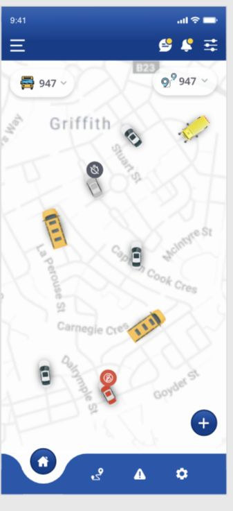
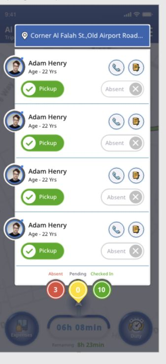

Two ways to read operations
Map and tabular views provide geographic and record-based ways to inspect trips.
A collection of original transport operations interfaces: map-based dispatch, trip listings, operational overlays, and companion driver/admin app screens.



Dashboard and mobile UI design
9 curated images
Dense information
Original design exports
A collection of original transport operations interfaces: map-based dispatch, trip listings, operational overlays, and companion driver/admin app screens.
Original design exports supplied from the project archive.
Tap any image to explore the original in detail.
A retrospective design analysis based on the preserved screens.
Map and tabular views provide geographic and record-based ways to inspect trips.
The policy overlay keeps the operational listing visible behind the task.
The companion app presentation shows distinct mobile views alongside the desktop dispatch interfaces.
A newly reconstructed wireframe study showing the hierarchy and content groups visible in the finished work.
Created for this portfolio from the final designs. This is a retrospective reconstruction, not evidence of original research, testing, or wireframing.
Let’s start with one clear idea and a free design preview for your business.
Talk to Vijay on WhatsApp ↗vijay.design360@gmail.com ↗